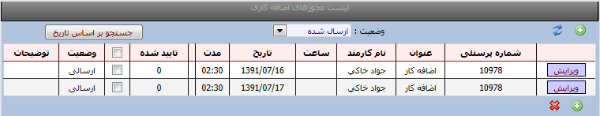
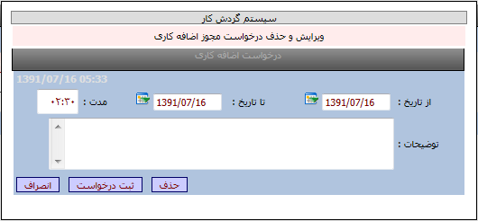

اضافه کاری
امکانات:
نمایش لیست درخواستهای اضافه کاری
ثبت و ویرایش و حذف درخواستهای اضافه کاری

روش ثبت یک درخواست :
ابتدا کلید جدید را می زنیم سپس مطابق تصویر از منوی تاریخ ،تاریخ درخواست ،از تاریخ تا تاریخ را وارد نموده و در قسمت مدت درخواست ،مدت اضافه کار را وارد نموده و درصورت لزوم ،درقسمت توضیحات ،توضیحات لازم را تایپ نمایید سپس با کلید ثبت درخواست، تایید می نمایید.
نکته : درخواست اضافه کار معمولاً زمانی مورد استفاده قرار می گیرد که درسازمان مورد نظر اضافه کار صفر می باشد یا دارای سقف محدودی است که پرسنل در صورتیکه از سقف مجاز بیشتر اضافه کاری داشته باشند طی درخواستی و با تایید مدیریت مربوطه اضافه کار مجاز شده و در گزارش فرد محاسبه می شود دقت نمایید که این اضافه کار ثابت یا تشویقی نیست و فرد حتماً باید در شرکت حضور داشته باشد .
روش حذف یک درخواست:
پس از ثبت یک درخواست تا زمانیکه درخواست بوسیله مدیر تایید نشده باشد امکان حذف وجود دارد .
ابتدا گزینه لیست درخواستها را انتخاب سپس کلید ویرایش را زده و کلید حذف را می زنید تا درخواست از لیست حذف گردد.
کلید جستجو براساس تاریخ : با کلید جستجو براسا تاریخ می توانید درخواستها را براساس تاریخهاییی که وارد می نمایید مشاهده نمایید.
کلید وضعیت :بوسیله این کلید می توانید درخواستهای ارسال شده /رد شده /تایید شده و همه درخواستها را انتخاب نمایید.
